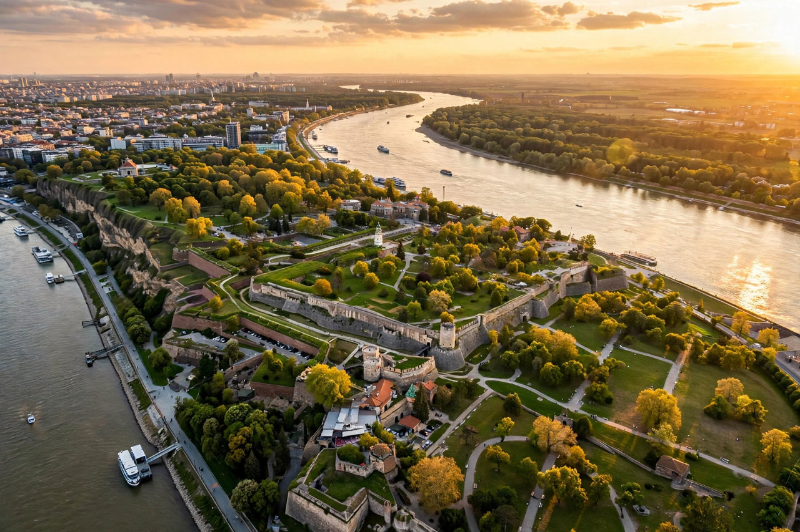

Belgrade
From Wikipedia, the free encyclopedia
| Belgrade | |
|---|---|
 | |
| Country | Serbia |
| Status | Capital and largest city |
| Population | ~1.2 million (city); ~1.7 million (metropolitan area) |
| Rivers | Danube and Sava (confluence) |
| Elevation | 117 m (384 ft) |
Belgrade (Serbian: Београд, Beograd, literally "White City") is the capital and largest city of Serbia. It stands at the confluence of the Sava and Danube rivers, where the Pannonian Plain meets the Balkans, and is one of the oldest continuously inhabited cities in Europe.
History
The Vinča culture flourished near the site in prehistory. Celts founded Singidūn in the 3rd century BC; Rome later developed it as Singidunum, a legionary fortress on the Danube frontier. The city changed hands repeatedly among Romans, Huns, Avars, Slavs, Byzantines, Bulgars, Hungarians and Ottomans. The medieval Belgrade Fortress at Kalemegdan, rebuilt many times, still dominates the old town. Belgrade became capital of the Serbian Despotate under Stefan Lazarević in the early 15th century, fell to the Ottoman Empire in 1521, and was contested between Ottomans and Habsburgs for two centuries. It became the capital of the Principality — later Kingdom — of Serbia in the 19th century, then of Yugoslavia, and suffered heavy damage in both World Wars and again during the 1999 NATO bombing.
Geography and districts
The historic core lies on the right bank of the Sava and the south bank of the Danube. Across the Sava lies New Belgrade (Novi Beograd), a planned district of broad boulevards and modernist blocks built after the Second World War, and beyond the Danube lies Zemun, once a separate Habsburg town. Ada Ciganlija, a river island turned peninsula on the Sava, is a popular recreational area.
Culture and landmarks
Landmarks include the Church of Saint Sava, among the largest Orthodox churches in the world; the National Museum and National Theatre on Republic Square; Knez Mihailova Street; Skadarlija, the bohemian quarter; and the Nikola Tesla Museum. The city is known for a vigorous nightlife centred partly on splavovi, floating clubs on the rivers. Belgrade hosts the BELEF and BITEF festivals and was home to the influential Yugoslav rock scene. See also Serbia and the Danube.